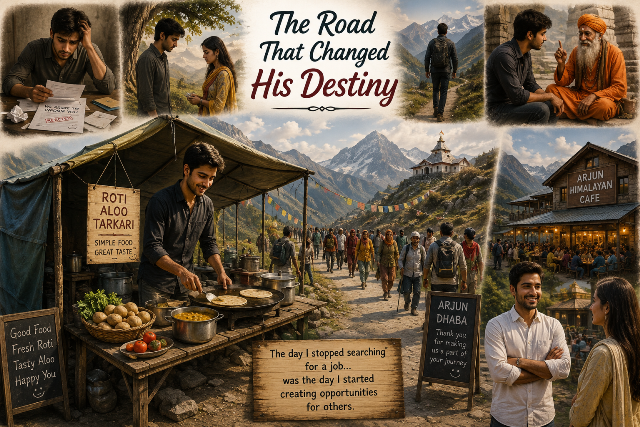

An Inspirational Story · A Story of Self-Belief
A young graduate loses job after job, walks away from everything he knows, and finds — on a mountain path he never planned to take — the one thing no rejection letter could give him.